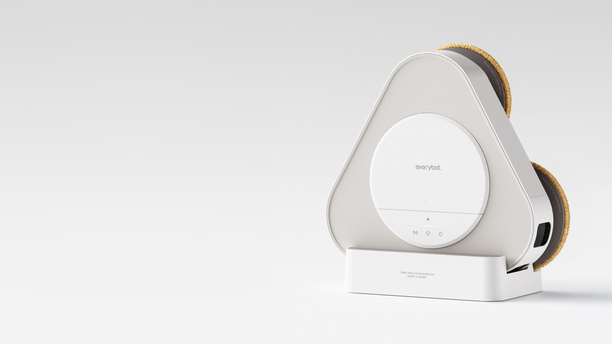
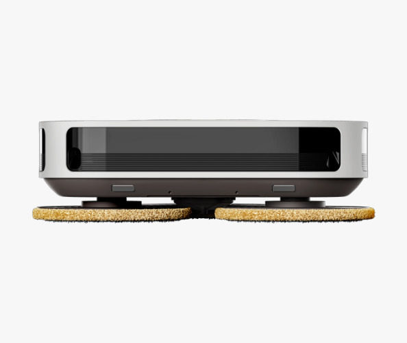
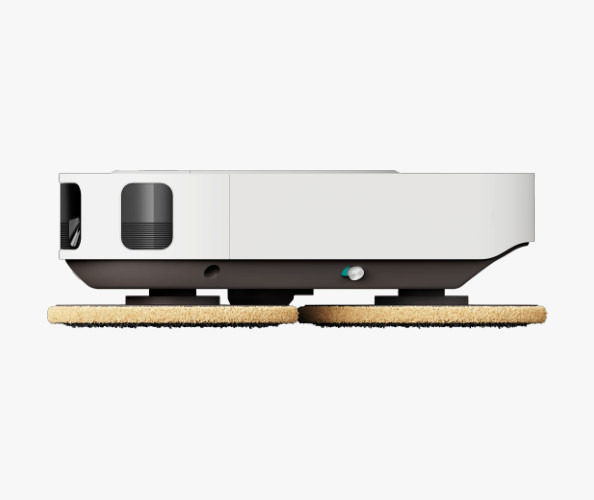
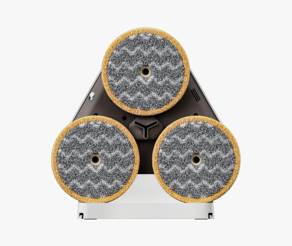
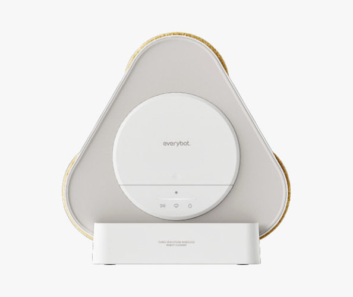
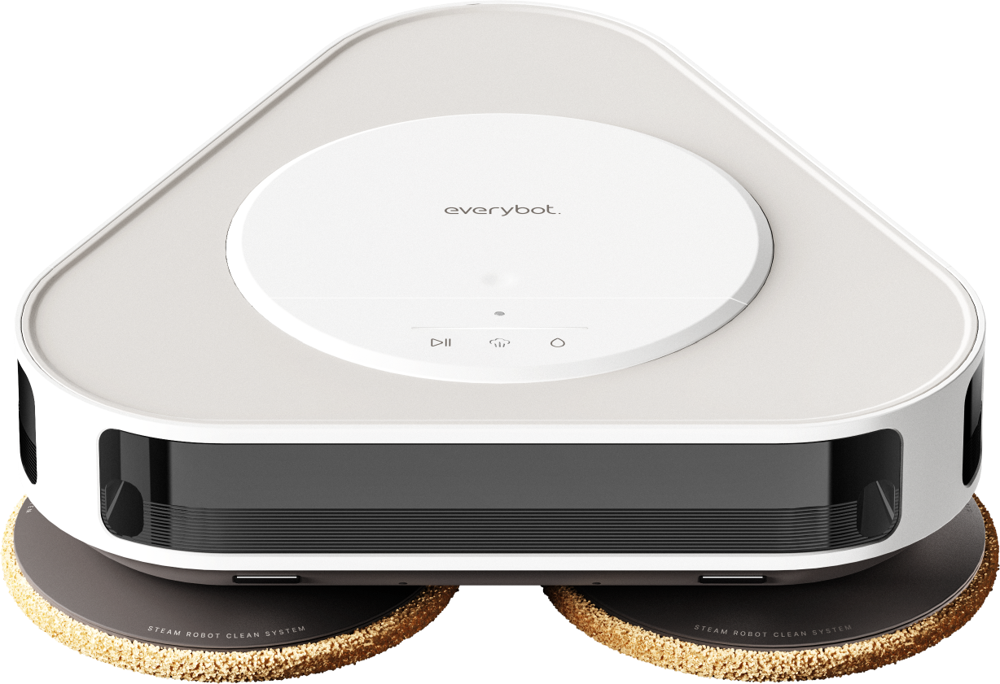
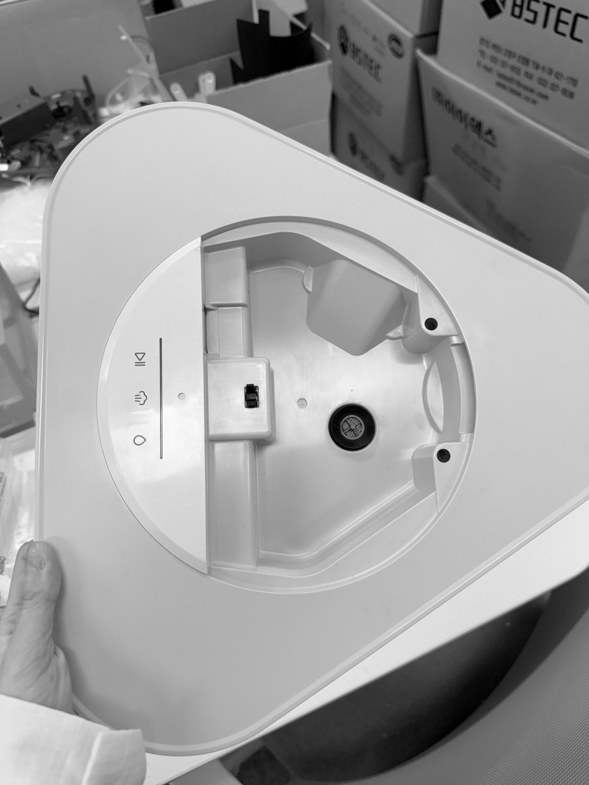

Threespin Steam
스팀 모듈을 탑재한 쓰리스핀 로봇청소기입니다. 높아진 전고를 슬림한 실루엣으로 보이게 하고, 서비스성을 높인 하우징 분할 구조를 설계하는 데 집중했습니다.

높아진 전고와 서비스성, 두 가지 문제
스팀 모듈 탑재로 높아진 전고와 하우징의 서비스성 문제를 디자인으로 해결했습니다.
Slim Look
대형 챔퍼와 다크 하단으로 높아진 전고를 슬림하게
3-Part Body
바텀·미들·탑 3분할로 하단 모듈 서비스성 개선
Steam Module
쓰리스핀 구동부 위 스팀 모듈 · 세워 보관하는 거치대





로봇청소기 시장에서는 전고가 낮을수록 제품 가치가 높게 평가되지만, 스팀 모듈 탑재로 전고가 크게 높아졌습니다.
바텀 하우징 엣지에 대형 챔퍼를 적용해 측면 볼륨을 덜어내고, 바텀 파트에 다크 톤 CMF를 적용해 하단부가 시각적으로 후퇴하도록 했습니다. 이를 통해 사용자의 시선 각도에서 실제 전고 대비 슬림한 실루엣으로 인지되도록 디자인했습니다.

기존 자사 제품은 깊은 바텀 하우징과 얕은 탑 하우징의 2분할 구조로 원가는 절감했지만, A/S 시 하단 모듈에 접근하려면 상단 모듈을 모두 분해해야 해 서비스성이 낮았습니다.
바디를 바텀·미들·탑 3분할 구조로 재구성해, 상단 전체를 해체하지 않고도 하단 모듈에 접근할 수 있도록 서비스성을 개선했습니다.

디자인 이후 UI·음성, CMF, 양산 단계까지 이어서 맡아 제품 완성도를 관리했습니다.


표시 UI · 음성 안내
동작 사양에 따른 표시 UI, 음성 안내, 효과음·TTS 제작
컬러 · 마감 확정
컬러칩 · 한도견본으로 확정, 실크 · 레이저 마킹 검수
양산 지원
디자인 사양서 · 시사출 검토 · 금형 수정 요청 · 마케팅 렌더링
목업으로 외관과 내부 구조를 확인하고, 시사출 외관을 검토했습니다.


